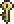

Dark Caster
| Drops | |
|---|---|
| Coins: | 140 |
| Item | Rate |
|  Golden Key | 1.5% |
| 1-3 | 98.5% |
| Dark Caster | |
|---|---|
| | |
| Statistics | |
| Type | Undead Enemy |
| Environment | Dungeon |
| AI Type | Caster |
| Damage | 20 |
| Max Life | 50 |
| Defense | 4 |
Dark Casters are one of the six enemy types you encounter in the Dungeon. They shoot Water Spheres that go through walls.
Dark Casters follow the Caster AI.
Dark Casters are immune to the Poisoned and the On Fire! debuffs.
Trivia
- The Dark Caster appears to be wearing the Robe, which players can craft with 30 Silk and 3 Rubies.
- If the Dark Caster were wearing the Wizard Hat it would look like Tim.
History
- 1.0.6: Dark Casters can now drop more than one Bone and rarely a Golden Key.
- 1.0.5: A longer delay was added between the 3-shot volley and the next teleport.
- 1.0.3: New graphics.
- Pre-Release: Introduced.